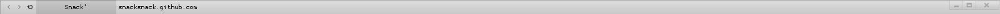
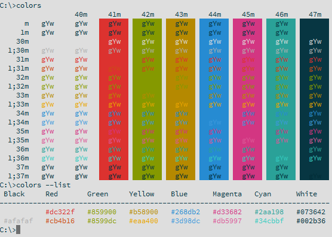
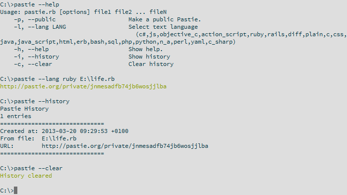

Introduction goes here.
Still working on it ._.
Startpage
Custom startpage, preferably used in firefox, not fully tested in other browsers.

UserChrome
Custom userChrome.css, only used in firefox and shouldn't require anything.
Still very buggy, so I'm still working on it daily.
Note; It's transparent so it takes your default window color (which is why it's grey for me).

Colors
Colors script, written in Ruby, supports table, list and custom colors.

Pastie
Pastie script, posts files to pastie.org

Scribbles
I tend to write a lot of crap in Ruby, I keep them in a repository for myself or anyone that cares.
Current list of items;
- colors
- euler
- feels
- pastie
- calc.rb
- life.rb
- maze.rb
- poker.rb
- rename.rb
- rock_paper_etc.rb
- testing.rb
- tick_tack_tow.rb
bbLean
Light bbLean theme, based on bb_crim by apathyrecharge.
Basically inverted his colors and removed the red.
Console2
Console2 settings file, light colors and default paths set.
Best used with an autorun.cmd and simple cmd.exe
{kind=link}
{kind=link}
{kind=link}
{kind=link}
{kind=link}